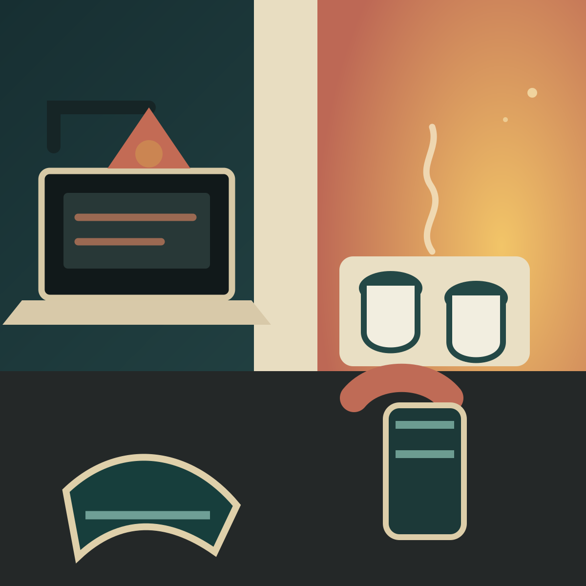

warm organic acoustic groove / body-led evening return / raw intimate dusk alternative
Po pracy świat trwa
Mogę zakończyć pracę przy rozsądnej granicy, zostawić zadanie niedokończone i wejść w wieczór bez traktowania odpoczynku jak nagrody za pełne domknięcie.

O utworze
Wieczorna piosenka o rozsądnej granicy pracy. Niedokończony plik nie znika, ale dostaje wyraźne miejsce powrotu na rano. Dzięki temu życie poza ekranem nie musi czekać na idealnie pustą listę zadań.
Dla kogo
Dla osób odpowiedzialnych i zaangażowanych, które potrafią długo przesuwać moment odpoczynku, ponieważ zawsze pozostaje jeszcze jeden mail, fragment albo drobna poprawka.
Intencja
- zakończyć dzień w świadomie wybranym miejscu zamiast czekać na pełne domknięcie
- zabezpieczyć konkretny punkt powrotu na następny poranek
- oddzielić wieczór od wyniku bez pomniejszania znaczenia pracy
CTA
Odwiedź kanał Cosmic Vibes na YouTube i poznaj więcej śpiewanych afirmacji o odpoczynku, tworzeniu, ambicji i zwykłym powrocie do siebie.
Produkcja lokalna
- Źródło pomysłu: CV-012 z katalogu SONG_BACKLOG.json.
- Wariant 1 wykorzystuje kanoniczny otwarty prompt z katalogu SONG_STYLE_DIRECTIONS.md.
- Utwór nie umniejsza pracy; pokazuje rozsądny punkt zatrzymania i konkretny sposób powrotu następnego dnia.
- Wszystkie warianty wykluczają disco polo, sentymentalną balladę, country-pop i adult-contemporary gloss.
- Opis YouTube i landing copy nie zawierają fragmentów refrenu.
- Publikacja wymaga ręcznej akceptacji.